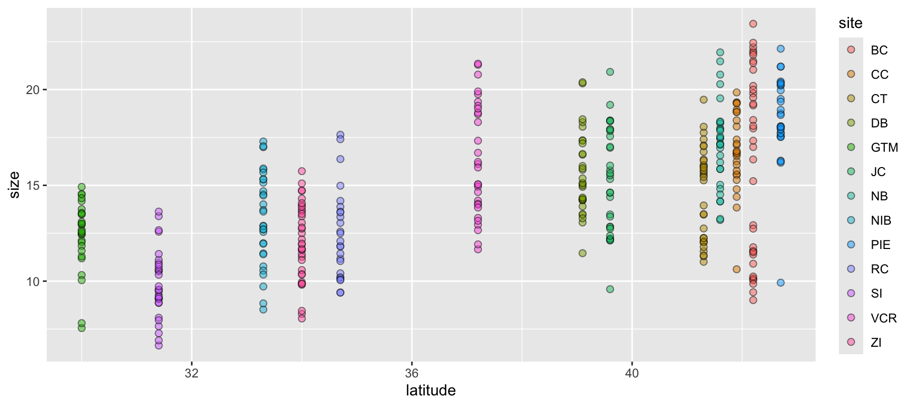
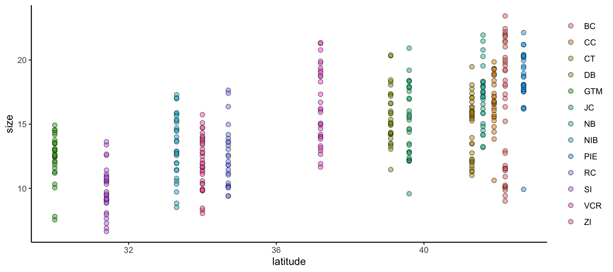
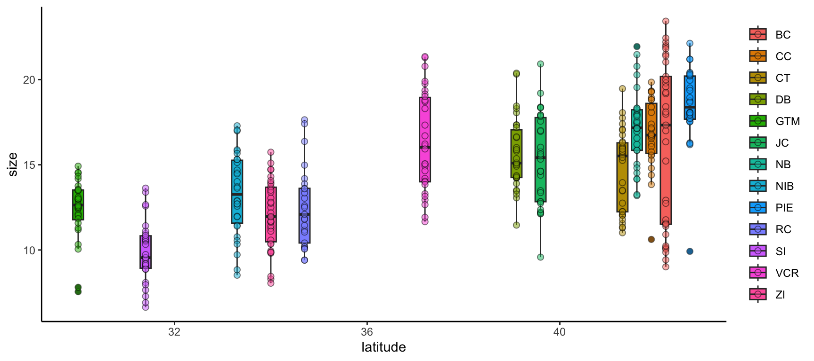
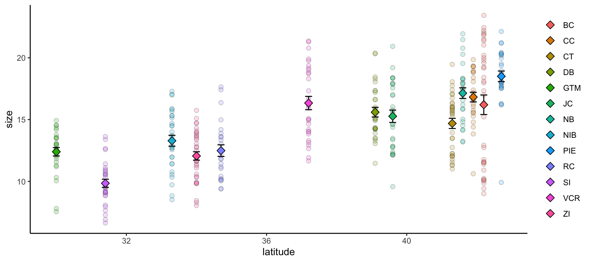
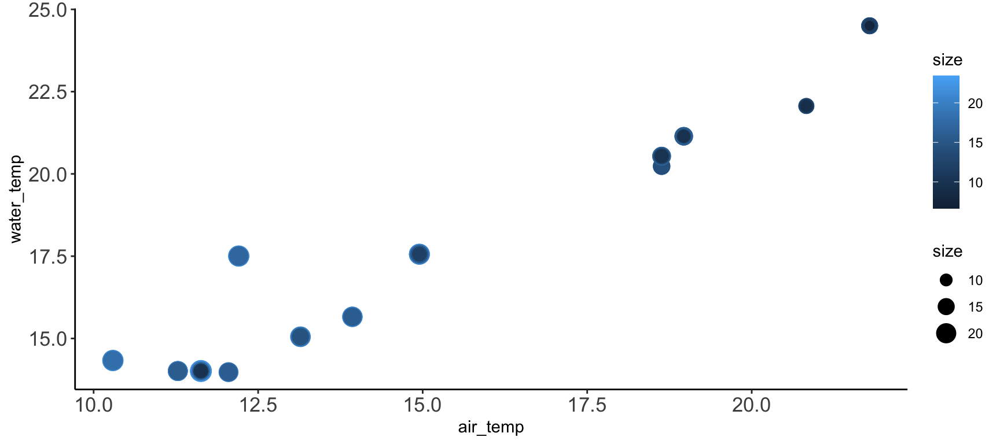
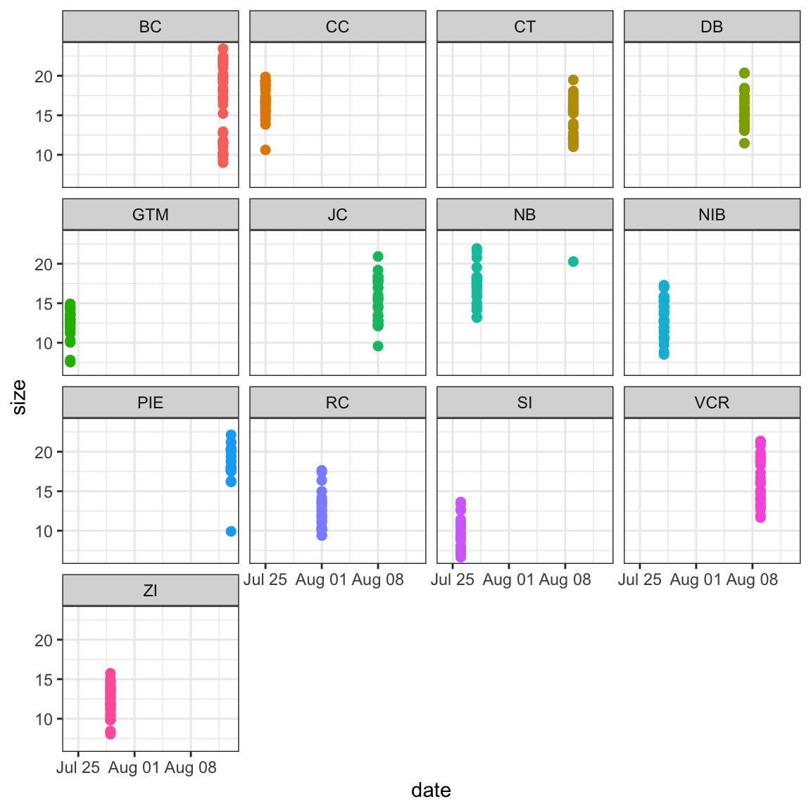
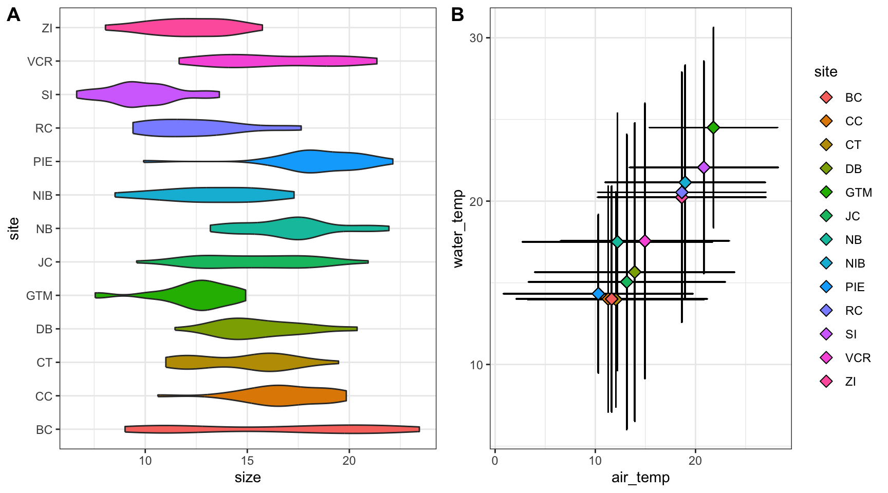
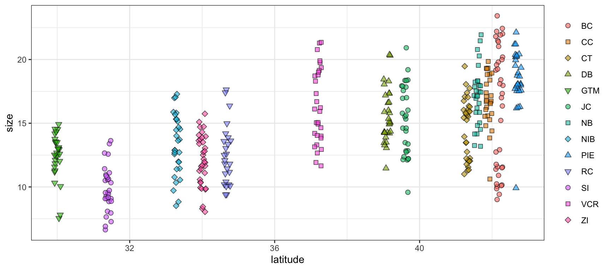
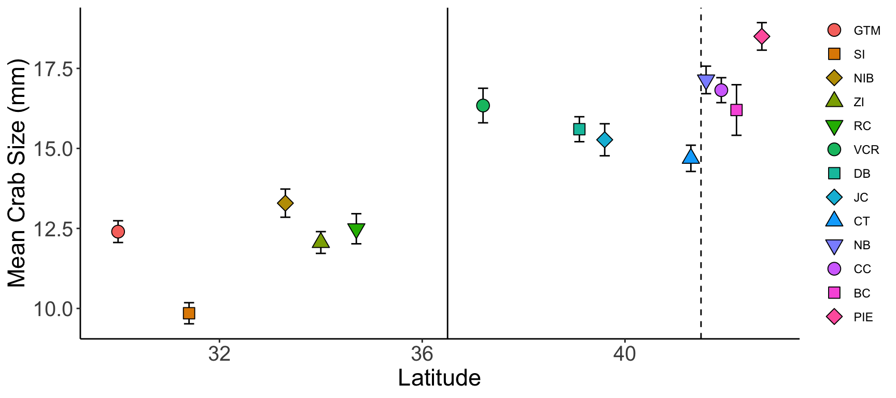
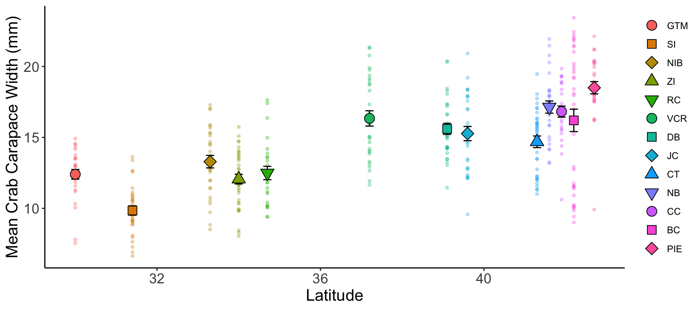

# Note that these lines only need to be run once per computer
## So you can skip this step if you've installed these before
install.packages("tidyverse")
install.packages("lterdatasampler")
install.packages("supportR")
install.packages("cowplot")Data Visualization & Exploration
Overview
Data visualization is a fundamental part of working with data. Visualization can be only used in the final stages of a project to make figures for publication but it can also be hugely valuable for quality control and hypothesis development processes. This module focuses on the fundamentals of graph creation in an effort to empower you to apply those methods in the various contexts where you might find visualization to be helpful.
Learning Objectives
After completing this module you will be able to:
- Define fundamental
ggplot2vocabulary - Identify appropriate graph types for given data type/distribution
- Discuss differences between presentation- and publication-quality graphs
- Explain how your graphs can be made more accessible
Needed Packages
If you’d like to follow along with the code chunks included throughout this module, you’ll need to install the following packages:
We’ll go ahead and load some of these libraries as well to be able to better demonstrate these concepts.
# Load needed libraries
library(tidyverse)Graphing with ggplot2
ggplot2 Fundamentals
You may already be familiar with the ggplot2 package in R but if you are not, it is a popular graphing library based on The Grammar of Graphics. Every ggplot is composed of four elements:
- A ‘core’
ggplotfunction call - Aesthetics
- Geometries
- Theme
Note that the theme component may be implicit in some graphs because there is a suite of default theme elements that applies unless otherwise specified.
This module will use example data to demonstrate these tools but as we work through these topics you should feel free to substitute a dataset of your choosing! If you don’t have one in mind, you can use the example dataset shown in the code chunks throughout this module. This dataset comes from the lterdatasampler R package and the data are about fiddler crabs (Minuca pugnax) at the Plum Island Ecosystems (PIE) LTER site.
# Load the lterdatasampler package
library(lterdatasampler)
# Load the fiddler crab dataset
data(pie_crab)
# Check its structure
str(pie_crab)tibble [392 × 9] (S3: tbl_df/tbl/data.frame)
$ date : Date[1:392], format: "2016-07-24" "2016-07-24" ...
$ latitude : num [1:392] 30 30 30 30 30 30 30 30 30 30 ...
$ site : chr [1:392] "GTM" "GTM" "GTM" "GTM" ...
$ size : num [1:392] 12.4 14.2 14.5 12.9 12.4 ...
$ air_temp : num [1:392] 21.8 21.8 21.8 21.8 21.8 ...
$ air_temp_sd : num [1:392] 6.39 6.39 6.39 6.39 6.39 ...
$ water_temp : num [1:392] 24.5 24.5 24.5 24.5 24.5 ...
$ water_temp_sd: num [1:392] 6.12 6.12 6.12 6.12 6.12 ...
$ name : chr [1:392] "Guana Tolomoto Matanzas NERR" "Guana Tolomoto Matanzas NERR" "Guana Tolomoto Matanzas NERR" "Guana Tolomoto Matanzas NERR" ...With a dataset in hand, let’s make a scatterplot of crab size on the Y-axis with latitude on the X. We’ll forgo doing anything to the theme elements at this point to focus on the other three elements.
ggplot(data = pie_crab, mapping = aes(x = latitude, y = size, fill = site)) +
geom_point(pch = 21, size = 2, alpha = 0.5)- 1
- We’re defining both the data and the X/Y aesthetics in this top-level bit of the plot. Also, note that each line ends with a plus sign
- 2
-
Because we defined the data and aesthetics in the
ggplot()function call above, this geometry can assume those mappings without re-specificying

We can improve on this graph by tweaking theme elements to make it use fewer of the default settings.
ggplot(data = pie_crab, mapping = aes(x = latitude, y = size, fill = site)) +
geom_point(pch = 21, size = 2, alpha = 0.5) +
theme(legend.title = element_blank(),
panel.background = element_blank(),
axis.line = element_line(color = "black"))- 1
-
All theme elements require these
element_...helper functions.element_blankremoves theme elements but otherwise you’ll need to use the helper function that corresponds to the type of theme element (e.g.,element_textfor theme elements affecting graph text)

Multiple Geometries
We can further modify ggplot2 graphs by adding multiple geometries if you find it valuable to do so. Note however that geometry order matters! Geometries added later will be “in front of” those added earlier. Also, adding too much data to a plot will begin to make it difficult for others to understand the central take-away of the graph so you may want to be careful about the level of information density in each graph. Let’s add boxplots behind the points to characterize the distribution of points more quantitatively.
ggplot(data = pie_crab, mapping = aes(x = latitude, y = size, fill = site)) +
geom_boxplot(pch = 21) +
geom_point(pch = 21, size = 2, alpha = 0.5) +
theme(legend.title = element_blank(),
panel.background = element_blank(),
axis.line = element_line(color = "black"))- 1
- By putting the boxplot geometry first we ensure that it doesn’t cover up the points that overlap with the ‘box’ part of each boxplot

Multiple Data Objects
ggplot2 also supports adding more than one data object to the same graph! While this module doesn’t cover map creation, maps are a common example of a graph with more than one data object. Another common use would be to include both the full dataset and some summarized facet of it in the same plot.
Let’s calculate some summary statistics of crab size to include that in our plot.
# Load the supportR library
library(supportR)
# Summarize crab size within latitude groups
crab_summary <- supportR::summary_table(data = pie_crab, groups = c("site", "latitude"),
response = "size", drop_na = TRUE)
# Check the structure
str(crab_summary)'data.frame': 13 obs. of 6 variables:
$ site : chr "BC" "CC" "CT" "DB" ...
$ latitude : num 42.2 41.9 41.3 39.1 30 39.6 41.6 33.3 42.7 34.7 ...
$ mean : num 16.2 16.8 14.7 15.6 12.4 ...
$ std_dev : num 4.81 2.05 2.36 2.12 1.8 2.72 2.29 2.42 2.3 2.34 ...
$ sample_size: int 37 27 33 30 28 30 29 30 28 25 ...
$ std_error : num 0.79 0.39 0.41 0.39 0.34 0.5 0.43 0.44 0.43 0.47 ...With this data object in-hand, we can make a graph that includes both this and the original, unsummarized crab data. To better focus on the ‘multiple data objects’ bit of this example we’ll pare down on the actual graph code.
ggplot() +
geom_point(pie_crab, mapping = aes(x = latitude, y = size, fill = site),
pch = 21, size = 2, alpha = 0.2) +
geom_errorbar(crab_summary, mapping = aes(x = latitude,
ymax = mean + std_error,
ymin = mean - std_error),
width = 0.2) +
geom_point(crab_summary, mapping = aes(x = latitude, y = mean, fill = site),
pch = 23, size = 3) +
theme(legend.title = element_blank(),
panel.background = element_blank(),
axis.line = element_line(color = "black"))- 1
-
If you want multiple data objects in the same
ggplot2graph you need to leave this top levelggplot()call empty! Otherwise you’ll get weird errors with aesthetics later in the graph - 2
- This geometry adds the error bars and it’s important that we add it before the summarized data points themselves if we want the error bars to be ‘behind’ their respective points

Streamlining Graph Aesthetics
Synthesis projects often generate an entire network of inter-related papers. Ensuring that all graphs across papers from a given team have a similar “feel” is a nice way of implying a certain standard of robustness for all of your group’s projects. However, copy/pasting the theme elements of your graphs can (A) be cumbersome to do even once and (B) needs to be re-done every time you make a change anywhere. Fortunately, there is a better way!
ggplot2 supports adding theme elements to an object that can then be reused as needed elsewhere. This is the same theory behind wrapping repeated operations into custom functions.
# Define core theme elements
theme_synthesis <- theme(legend.position = "none",
panel.background = element_blank(),
axis.line = element_line(color = "black"),
axis.text = element_text(size = 13))
# Create a graph
ggplot(pie_crab, aes(y = water_temp, x = air_temp, color = size, size = size)) +
geom_point() +
theme_synthesis +
theme(legend.position = "right")- 1
-
This theme element controls the text on the tick marks.
axis.titlecontrols the text in the labels of the axes - 2
-
As a bonus, subsequent uses of
theme()will replace defaults defined in your earlier theme object. So, you can design a set of theme elements that are usually appropriate and then easily change just some of them as needed

Multi-Panel Graphs
It is sometimes the case that you want to make a single graph file that has multiple panels. For many of us, we might default to creating the separate graphs that we want, exporting them, and then using software like Microsoft PowerPoint to stitch those panels into the single image we had in mind from the start. However, as all of us who have used this method know, this is hugely cumbersome when your advisor/committee/reviewers ask for edits and you now have to redo all of the manual work behind your multi-panel graph.
Fortunately, there are two nice entirely scripted alternatives that you might consider: Faceted graphs and Plot grids. See below for more information on both.
In a faceted graph, every panel of the graph has the same aesthetics. These are often used when you want to show the relationship between two (or more) variables but separated by some other variable. In synthesis work, you might show the relationship between your core response and explanatory variables but facet by the original study. This would leave you with one panel per study where each would show the relationship only at that particular study.
Let’s check out an example.
ggplot(pie_crab, aes(x = date, y = size, color = site))+
geom_point(size = 2) +
facet_wrap(. ~ site) +
theme_bw() +
theme(legend.position = "none")- 1
-
This is a
ggplot2function that assumes you want panels laid out in a regular grid. There are otherfacet_...alternatives that let you specify row versus column arrangement. You could also facet by multiple variables by putting something to the left of the tilde - 2
- We can remove the legend because the site names are in the facet titles in the gray boxes

In a plot grid, each panel is completely independent of all others. These are often used in publications where you want to highlight several different relationships that have some thematic connection. In synthesis work, your hypotheses may be more complicated than in primary research and such a plot grid would then be necessary to put all visual evidence for a hypothesis in the same location. On a practical note, plot grids are also a common way of circumventing figure number limits enforced by journals.
Let’s check out an example that relies on the cowplot library.
# Load a needed library
library(cowplot)
# Create the first graph
crab_p1 <- ggplot(pie_crab, aes(x = site, y = size, fill = site)) +
geom_violin() +
coord_flip() +
theme_bw() +
theme(legend.position = "none")
# Create the second
crab_p2 <- ggplot(pie_crab, aes(x = air_temp, y = water_temp)) +
geom_errorbar(aes(ymax = water_temp + water_temp_sd, ymin = water_temp - water_temp_sd),
width = 0.1) +
geom_errorbarh(aes(xmax = air_temp + air_temp_sd, xmin = air_temp - air_temp_sd),
width = 0.1) +
geom_point(aes(fill = site), pch = 23, size = 3) +
theme_bw()
# Assemble into a plot grid
cowplot::plot_grid(crab_p1, crab_p2, labels = "AUTO", nrow = 1)- 1
- Note that we’re assigning these graphs to objects!
- 2
- This is a handy function for flipping X and Y axes without re-mapping the aesthetics
- 3
- This geometry is responsible for horizontal error bars (note the “h” at the end of the function name)
- 4
-
The
labels = "AUTO"argument means that each panel of the plot grid gets the next sequential capital letter. You could also substitute that for a vector with labels of your choosing

Accessibility Considerations
After you’ve made the graphs you need, it is good practice to revisit them with to ensure that they are as accessible as possible. You can of course also do this during the graph construction process but it is sometimes less onerous to tackle as a penultimate step in the figure creation process. There are many facets to accessibility and we’ve tried to cover just a few of them below.
Color Choice
One of the more well-known facets of accessibility in data visualization is choosing colors that are “colorblind safe”. Such palettes still create distinctive colors for those with various forms of color blindness (e.g., deuteranomoly, protanomaly, etc.). The classic red-green heatmap for instance is very colorblind unsafe in that people with some forms of colorblindness cannot distinguish between those colors (hence the rise of the yellow-blue heatmap in recent years). Unforunately, the ggplot2 default rainbow palette–while nice for exploratory purposes–is not colorlbind sfae.
Some websites (such as colorbewer2.org) include a simple checkbox for colorblindness safety which automatically limits the listed options to those that are colorblind safe. Alternately, you could use a browser plug-in (such as Let’s get color blind on Google Chrome) to simulate colorblindness on a particular page.
One extreme approach you could take is to dodge this issue entirely and format your graphs such that color either isn’t used at all or only conveys information that is also conveyed in another graph aesthetic. We don’t necessarily recommend this as color–when the palette is chosen correctly–can be a really nice way of making information-dense graphs more informative and easily-navigable by viewers.
Multiple Modalities
Related to the color conversation is the value of mapping multiple aesthetics to the same variable. By presenting information in multiple ways–even if that seems redundant–you enable a wider audience to gain an intuitive sense of what you’re trying to display.
ggplot(data = pie_crab, mapping = aes(x = latitude, y = size,
fill = site, shape = site)) +
geom_jitter(size = 2, width = 0.1, alpha = 0.6) +
scale_shape_manual(values = c(21:25, 21:25, 21:23)) +
theme_bw() +
theme(legend.title = element_blank())- 1
- In this graph we’re mapping both the fill and shape aesthetics to site
- 2
-
This is a little cumbersome but there are only five ‘fill-able’ shapes in R so we need to reuse some of them to have a unique one for each site. Using fill-able shapes is nice because you get a crisp black border around each point. See
?pchfor all available shapes

In the above graph, even though the rainbow palette is not ideal for reasons mentioned earlier, it is now much easier to tell the difference between sites with similar colors. For instance, “NB”, “NIB”, and “PIE” are all shades of light blue/teal. Now that they have unique shapes it is dramatically easier to look at the graph and identify which points correspond to which site.
Presentation vs. Publication
One final element of accessibility to consider is the difference between a ‘presentation-quality’ graph and a ‘publication-quality’ one. While it may be tempting to create a single version of a given graph and use it in both contexts that is likely to be less effective in helping you to get your point across than making small tweaks to two separate versions of what is otherwise the same graph.
Do:
- Increase size of text/points greatly
- If possible, sit in the back row of the room where you’ll present and look at your graphs from there
- Consider adding graph elements that highlight certain graph regions
- Present summarized data (increases focus on big-picture trends and avoids discussion of minutiae)
- Map multiple aesthetics to the same variables
Don’t:
- Use technical language / jargon
- Include unnecessary background elements
- Use multi-panel graphs (either faceted or plot grid)
- If you have multiple graph panels, put each on its own slide!
ggplot(crab_summary, aes(x = latitude, y = mean,
shape = reorder(site, latitude),
fill = reorder(site, latitude))) +
geom_vline(xintercept = 36.5, color = "black", linetype = 1) +
geom_vline(xintercept = 41.5, color = "black", linetype = 2) +
geom_errorbar(mapping = aes(ymax = mean + std_error, ymin = mean - std_error),
width = 0.2) +
geom_point(size = 4) +
scale_shape_manual(values = c(21:25, 21:25, 21:23)) +
labs(x = "Latitude", y = "Mean Crab Size (mm)") +
theme(legend.title = element_blank(),
axis.line = element_line(color = "black"),
panel.background = element_blank(),
axis.title = element_text(size = 17),
axis.text = element_text(size = 15))- 1
-
We can use the
reorderfunction to make the order of sites in the legend (from top to bottom) match the order of sites in the graph (from left to right) - 2
- Adding vertical lines at particular parts in the graph can make comparisons within the same graph easier
- 3
-
labslets us customize the title and label text of a graph

Do:
- Increase size of text/points slightly
- You want to be legible but you can more safely assume that many readers will be able to increase the zoom of their browser window if needed
- Present un-summarized data (with or without summarized points included)
- Many reviewers will want to get a sense for the “real” data so you should include unsummarized values wherever possible
- Use multi-panel graphs
- If multiple graphs “tell a story” together, then they should be included in the same file!
- Map multiple aesthetics to the same variables
- If publishing in a journal available in print, check to make sure your graph still makes sense in grayscale
- There are nice browser plug-ins (like Grayscale the Web for Google Chrome) for this too
Don’t:
- Include unnecessary background elements
- Add graph elements that highlight certain graph regions
- You can–and should–lean more heavily on the text of your publication to discuss particular areas of a graph
ggplot() +
geom_point(pie_crab, mapping = aes(x = latitude, y = size,
color = reorder(site, latitude)),
pch = 19, size = 1, alpha = 0.3) +
geom_errorbar(crab_summary, mapping = aes(x = latitude, y = mean,
ymax = mean + std_error,
ymin = mean - std_error),
width = 0.2) +
geom_point(crab_summary, mapping = aes(x = latitude, y = mean,
shape = reorder(site, latitude),
fill = reorder(site, latitude)),
size = 4) +
scale_shape_manual(values = c(21:25, 21:25, 21:23)) +
labs(x = "Latitude", y = "Mean Crab Carapace Width (mm)") +
theme(legend.title = element_blank(),
axis.line = element_line(color = "black"),
panel.background = element_blank(),
axis.title = element_text(size = 15),
axis.text = element_text(size = 13))- 1
- Here we are using a reasonable amount of technical language

Additional Resources
Papers & Documents
- NCEAS Colorblind Safe Color Schemes reference document
Workshops & Courses
- NCEAS Scientific Computing team’s Coding in the Tidyverse workshop
ggplot2module - The Carpentries’ Data Analysis and Visualization in R for Ecologists
ggplot2episode